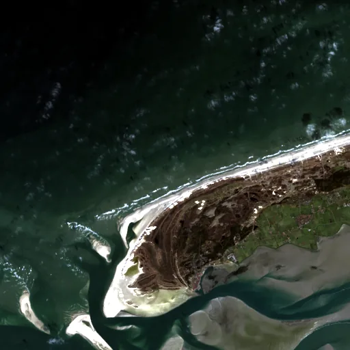

Benchmark / Near-lossless / l8-oli-8 / l8-oli-8-12
l8-oli-8-12
wadden · 2023-03-02 · sample details

Metadata
| id | l8-oli-8-12 |
|---|---|
| source | LANDSAT/LC08/C02/T1 (Landsat Collection 2 Level-1) |
| asset | LANDSAT/LC08/C02/T1/LC08_198023_20230302 |
| crs | EPSG:32631 |
| transform | 638775.0 30.0 0.0 5926935.0 0.0 -30.0 |
| datetime_start | 2023-03-02T10:33:30.546Z |
| datetime_end | 2023-03-02T10:33:30.546Z |
| bands | B1|B2|B3|B4|B5|B6|B7|B9 |
| shape | 8x512x512 |
| dtype | uint16 |
| unit | DN |
| scale | 1 |
| offset | 0 |
| nodata | 0 |
| input_sha256 | 38fb75dd2c392ed61aeaa18add425d1d3aae9259efb1af9d775cc6c6055cd2ee |
| site | wadden |
| regime | water |
| lon | 5.203 |
| lat | 53.402 |
| spacecraft | LANDSAT_8 |
| sensor | OLI_TIRS |
| product_id | LC08_L1TP_198023_20230302_20230316_02_T1 |
| wrs_path | 198 |
| wrs_row | 23 |
| acquired_m | 30 |